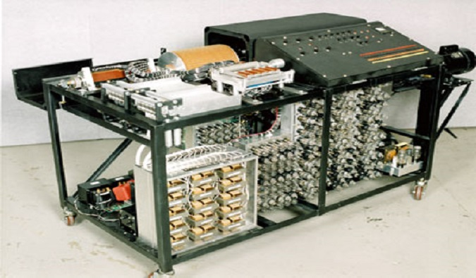
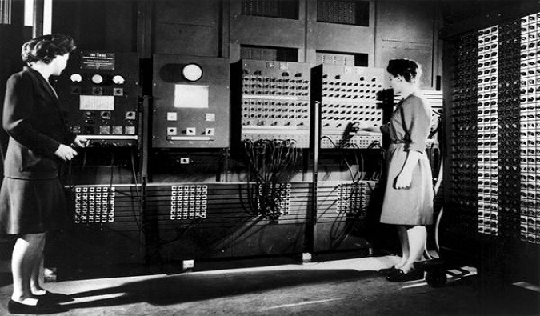

Шарл Ксавие Томас де Колмар създава “Аритмометър”, първия масово произвеждан калкулатор. Той можел да умножава по метода на Лайбниц и чрез косвени методи с него можело да се дели. Конструкцията била изключително удачна и най-надеждната за времето си. Това е най-дълго произвежданата изчислителна машина на света. Последните бройки били продадени в началото на XX век.
1834g
Аналитична машина
През 1834 г. англичанинът Чарлз Бабидж изобретява аналитична машина. Тя се състояла от "склад" за съхраняване на числата, "мелници" - за производство (извършване) на аритметичните действия над числата ("аритметично устройство"), устройство, управляващо в определена последователност операциите на машината ("устройство за управление"), устройство за вход и изход на данни. В аналитичната машина били предвидени три различни начина за извеждане на получените резултати: печатане на едно или две копия, изготвяне на стереотипен отпечатък, пробивки на перфокарти. Аналитичната машина не била построена, но Бабидж направил повече от 200 чертежа на нейни различни възли и около 30 варианта на общите схеми на машината. При това били използвани повече от 4 хиляди "механични обозначения". Аналитичната машина на Бабидж е първият прототип на съвременните компютри..
1935г
IBM 601
IBM представя на света IBM 601 – машина, на която аритметичното устройство е направено от релета и може да извършва операцията умножение за 1 секунда. Небивалата по това време скорост и мощност й донася огромна популярност сред учените и бизнесмените.
1938g
Computer-ABC

Джон Атанасов и Клифърд Бери достигат до идеята за създаване на изчислителна машина, основана на принципите на двоичната бройна система. Това устройство се счита за първия реално действащ модел на компютър. Това била и първата машина, в името на която участва и думата Computer - Atanasoff-Berry Computer – ABC.
Пирамидите (Гиза)
Египет,
Те са на възраст над 3 000 години и все още нямаме добра представа как са били построени или как египтяните са ги направили толкова точни (дали са участвали извънземни?). Трите пирамиди се привеждат в съответствие със звездите и слънцето и съдържат тонове камери, които все още не са (и не могат да бъдат) отворени. Искам да кажа, как са създали тези малки камери, където хората дори не могат да пълзят? Най-големият, наречен Великата пирамида, е построен от фараона Хуфу и има ограничен достъп до него. Пирамидите наистина са чудо на човешкото инженерство, което е годно за царе.
Тадж Махал
Индия.

Построен през 1600-те, тази сграда в Агра, Индия, е завещание за неограничена любов. Тази бяла мраморна гробница, построена за починалата жена на император Шах Джахан. През 1983 г. е обявен за обект на ЮНЕСКО за световно наследство и е обявен за едно от новите седем чудеса на света. Тадж вижда между 2 и 4 милиона туристи годишно, така че има скорошни ограничения на туризма в усилията да се помогне за защитата на сайта. Най-голямата заплаха обаче е замърсяването на въздуха, което унищожава мрамора.